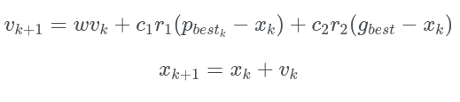

O PSO ( Particle Swarm Optmization), que traduzindo é chamado de otimização por enxame de partículas, é um algoritmo que busca um solução otima em um espaço de busca, através de troca de informações entre os indivíduos de uma população que determina cada trajetória de cada individuo baseado nos seus vizinhos mais próximo.
Ele simula o comportamento de certos animais como passaros e peixes na busca coletiva por alimento, proteção de predadores e caminhos de migração.
Criado por James Kennedy e Russell Eberhart, encontra-se, atualmente, entre as meta-heurísticas de algoritmos de otimização baseadas em padrões da natureza.

x[] - Vetor da posição de cada particula.
v[] - vetor da velocidade de cada particula.
p - pbest melhor posição encontrada pelo indíviduo (particula).
g - gbest melhor posição encontrada por todos indívuos (particulas).
c1, c2 - Parâmetros cognitivos individual e social.
w - inércia do deslocamento sobre posição (x) e velocidade (v) de cada individuo.
r1 e r2 - números aleátorio entre 0 e 1 (utilizado para o algoritmo não cair em minimos locais e ter maior possibilidade de resultados).
O problema a ser solucionado ao lado é o problema do caixeiro viajante, onde ele precisa percorre todas as cidades(vertices) e retornar na cidade origem, sem repetir um caminho (aresta).
Referência
Optimização por enxame de partículas(wikipedia)
Otimização por enxame de partículas - PSO
Problema do caixeiro Viajante